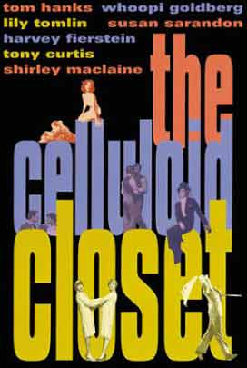
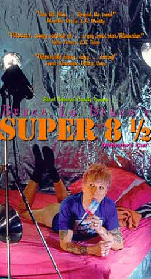
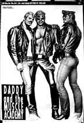
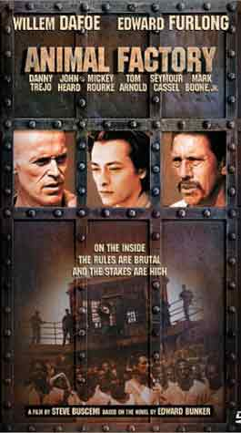

medlemskab kr. 50,- (1. gang gratis)
entré gratis/10 kr,- ved storskærm
Looking for Langston (1988)
Directed by Isaac Julien
A black and white, fantasy-like recreation of high-society gay men during the Harlem Renaissance, with archival footage and photographs intercut with a story. A wake is going on, with mourners gathered around a coffin.
Downstairs is an elegant bar where tuxedoed men dance and talk. One of them has a dream in which he comes upon Beauty, who seems to reject him, although when he awakes, Beauty is sleeping beside him.
His story and his visits to the jazz and dance club are framed by voices reading from the poetry and essays of Hughes and others.
The text is rarely explicit, but the freedom of gay Black men in the 1920s in Harlem is suggested and celebrated visually.
Celluloid Closet, The (1995)
Directed by Rob Epstein/Jeffrey Friedman

A comprehensive documentary of the history of gays and lesbians in cinema, from negative to positive reflections of gay characters and the troubles of actors and actresses.Hilsen Jørgen og Anderz
dunst aktivist møder hver tirsdag
Vi planlægger næste store show og nye dunst aktiviteter i vores værksted/internetcafe/lounge.
Kom med dine idéer !
medlemskab kr. 50,- (1. gang gratis)
entré gratis/10 kr,- ved storskærm
tema: Trash, pimps and hustlers
Super 8 1/2 (1993)
Bruce LaBruce¹s
How do you get to be a porn star ? (*)
More art house than porn

Being the first Bruce La Bruce movie I have ever seen, I was quite intrigued to see "Super 8 & 1/2." The movie is overlong, but does have some very amusing bits mixed in with the graphic sex and general weirdness.Bruce is the big star of the movie, but the Wednesday characters are also quite fun, and the cameos by Scott Thompson, Richard Kern, and Vaginal Cream Davis are fun. A must see for anyone familiar with Bruce's writing in Exclaim magazine (though it helps to be open-minded too).
(*) You blow !
Hustler White (1996)
Bruce LaBruce
 Starring,
written and co-directed by eccentric Canadian film auteur Bruce LaBruce,
who plays a venomous eurofag sociologist named Jurgen Anger who meets and
quickly becomes obsessed with a sexy street hustler named Montgomery Ward,
(played by ex-Madonna boytoy and former gay porn star, Tony Ward).
Starring,
written and co-directed by eccentric Canadian film auteur Bruce LaBruce,
who plays a venomous eurofag sociologist named Jurgen Anger who meets and
quickly becomes obsessed with a sexy street hustler named Montgomery Ward,
(played by ex-Madonna boytoy and former gay porn star, Tony Ward). "Hustler White" follows Monti through his daily routine of sordid and bizarre encounters with hustlers, johns and pornographers, exposing L.A.'s surreal sexual underground (amputee sex and mummification, just for starters).
The sometimes scary, sometimes offensive but downright hilarious world LaBruce brings us is a singular, unique vision that gives this film its place in the pantheon of gay cinema.
Starring: Bruce La Bruce, Tony Ward, Ron Athey, Kevin Kramer, Wash West, Vaginal Davis, Tony Powers, Paul Bellini. Directed By Bruce La Bruce and Rick Castro. 80 Minutes. 1996.
Hilsen Jørgen og Anderz
dunst aktivist møder hver tirsdag
Vi planlægger næste store show og nye dunst aktiviteter i vores værksted/internetcafe/lounge.
Kom med dine idéer !
medlemskab kr. 50,- (1. gang gratis)
entré gratis/10 kr,- ved storskærm
teme: Real Men
Daddy and the Muscle Academy (1992)
Atmospheric documentary on life of Erotic artist 'Tom of Finland' directed by Ilppo Pohjola
Manden der lagde stilen for alverdens læderbøsser. Portræt at den finske kunstner, der som regel iførte sig uniform for at komme i stemning til at male.

The film gives voice to the life and creative impulse of the gay erotic artist known across the gay world as 'Tom of Finland'. Essentially an interview documentary with some very brief 'enactments' inspired by Tom's artwork, this is a long way from fetish pornography but is thought-provoking nonetheless.Tom describes his early life in the Finnish army, in mundane jobs and, matter-of-factly, how he became inspired to put onto paper his exagerrated masculine fantasies of men in leather, uniforms and workwear.
Most of the interview is shot in the stillness of Tom's apartment/studio, with the film broken into segments centering on themes of his work: depiction of black men and women, technique, use of models and leather as his muse: "I put on a special outfit", he explains, "if I need to be inspired".
Putting its arthouse stylistic shortcomings aside, the film is a precious document of this influential artist who died a few years after it was made.
The brief commentaries from friend and critics point out just how deeply Tom's fantasies have become the primers for the post-war emergent gay subcultures of Leather/SM, with all their knock-on influence on wider cultural consciousness. While outsiders may not relate to Tom's proclivities, they will be moved by his integrity and skill in realising his
fantasies.

Animal Factory (2000)directed by Steve Buscemi
Den hårdkogte fængselsfilm hvor kun de modigste tør bukke sig efter sæben i bruserummet.
The story:
Ron, who's young, slight, and privileged, is sentenced to prison on marijuana charges. For whatever reason, he brings out paternal feelings in an 18-year prison veteran, Earl Copan, who takes Ron under his wing. The film explores the nature of that relationship, Ron's part in Earl's gang, and the way Ron deals with aggressive cons intent on assault and rape.
There's casual racism, too, in the prisoners and the guards, a strike called by Black prisoners, and the nearly omnipresence of hard drugs. Ron's lawyer is working on getting Ron out quickly, Earl has a shot at parole, and death seems to be waiting in the next cell. Will prison turn Ron into an animal?
Hilsen Jørgen og Anderz